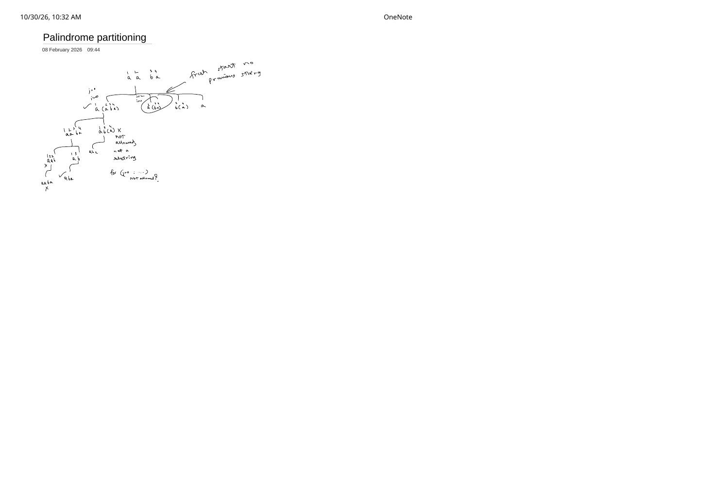

Palindrome Partitioning (LeetCode 131): Contiguous Prefix Cuts vs. Subsequences
Expanded from handwritten competitive coding study note: 13_Palindrome_partitioning.pdf
When transitioning from Subsets—which also writes for (int j = i; j < n; ++j) dfs(j + 1)—to Palindrome Partitioning, the loop header looks identical while its meaning changes completely! 13_Palindrome_partitioning.pdf traces s = "aaba" to expose the #1 mental-model bug: treating j as a character to append (skipping indices in between) instead of the inclusive right endpoint of a contiguous prefix cut s[i .. j].
Problem Statement
LeetCode 131 · Palindrome Partitioning
Given a string s, partition s such that every substring of the partition is a palindrome. Return all possible palindrome partitionings of s.
Example from note: s = "aaba" → [["a", "a", "b", "a"], ["a", "aba"], ["aa", "b", "a"]].
Intuition from 13_Palindrome_partitioning.pdf: Contiguous Cuts & “Fresh Start”
Label the characters of s = "aaba" with positions 0, 1, 2, 3 (written 1, 2, 3, 4 above the string in the note). Suppose we are at index i = 0:
Why Subsequence-Style Index Skipping Is Illegal!
In Subsets, advancingj from 0 to 2 under s[0] = 'a' pairs position 1 with position 3 to form "ab" (skipping position 2). As annotated on the scan: ab(a) ✗ — NOT allowed, not a substring! Every character of s must appear in order with zero skipped characters: we are placing knife cuts between adjacent characters, not picking subsequences!
Once we reinterpret (i, j) as cutting off the contiguous prefix s[i .. j], two rules govern the entire tree:
- At start index
i, try every cut endpointj = i, i + 1, ..., n - 1:j = 0: prefixs[0..0] = "a"(palindrome ✓) → recurse on suffix"aba"(i = 1).j = 1: prefixs[0..1] = "aa"(palindrome ✓) → recurse on suffix"ba"(i = 2).j = 2: prefixs[0..2] = "aab"(not palindrome ✗) →continue! (Don'tbreak: a longer prefix like"aba"can become a palindrome again!)j = 3: prefixs[0..3] = "aaba"(not palindrome ✗) →continue.
- “Fresh start, no previous string” on recursion: Once
s[i .. j]is pushed intoparts, the child calldfs(j + 1)starts completely fresh at indexj + 1—every choice at the next level cuts a brand-new prefixs[j + 1 .. k]!
"a" | "aba": j = 2 ("ab") is not a palindrome, yet j = 3 ("aba") is a palindrome! That is why non-palindromic prefixes must use continue, never break.Progression: Two-Pointer Check → $O(n^2)$ DP Precomputation
- Basic Backtracking (Two-Pointer Palindrome Check): Test each candidate cut
s[i..j]on the fly in $O(j - i + 1)$ time using two pointers. Simple and uses $O(n)$ auxiliary space, though identical substringss[i..j]get re-tested along different prefix partitions. - Optimal Backtracking + $O(n^2)$ Palindrome Table: Since $n \le 16$, precompute
isPal[i][j] = (s[i] == s[j]) && (j - i <= 2 || isPal[i + 1][j - 1])in $O(n^2)$ before recursion so every cut check inside the backtracking tree becomes an $O(1)$ lookup!
Clean C++ Implementation
#include <cstdint>
#include <string>
#include <vector>
using namespace std;
class Solution {
public:
vector<vector<string>> partition(string s) {
int n = (int)s.size();
// Precompute O(n^2) palindrome lookup table so every cut check is O(1)
vector<vector<uint8_t>> isPal(n, vector<uint8_t>(n, 0));
for (int len = 1; len <= n; ++len) {
for (int i = 0; i + len - 1 < n; ++i) {
int j = i + len - 1;
isPal[i][j] = (s[i] == s[j]) && (len <= 2 || isPal[i + 1][j - 1]);
}
}
vector<vector<string>> ans;
vector<string> parts;
auto dfs = [&](auto& self, int i) -> void {
if (i == n) {
ans.push_back(parts); // partitioned all n characters!
return;
}
for (int j = i; j < n; ++j) {
if (!isPal[i][j]) continue; // MUST be continue, not break!
parts.push_back(s.substr(i, j - i + 1));
self(self, j + 1); // fresh start at index j + 1
parts.pop_back();
}
};
dfs(dfs, 0);
return ans;
}
};Time & Space Complexity Proof
- Why $2^{n - 1}$ Partitions Exist: Between $n$ characters there are $n - 1$ internal gaps, and each gap independently either receives a cut or does not—giving $2^{n - 1}$ total partitions! On the worst-case string
s = "aaaa...a", every single one of those $2^{n - 1}$ partitions consists purely of palindromes. - Time Complexity: $O(n^2)$ DP precomputation + $O(n \cdot 2^n)$ to materialize and copy all $2^{n - 1}$ partitions of total character length $n$ each $= \Theta(n \cdot 2^n)$.
- Auxiliary Space Complexity: $O(n^2)$ for
isPal+ $O(n)$ recursion stack and activeparts(or $O(n)$ total auxiliary space if using two-pointer checks).
Key Edge Cases
- Using
breakinstead ofcontinuewhen!isPal[i][j]: Fails immediately on"aba"—s[0..1] = "ab"is not a palindrome, sobreakwould skips[0..2] = "aba"! - Follow-Up — Palindrome Partitioning II (LeetCode 132, Minimum Cuts Only): When $n = 2000$ and only the minimum number of cuts is asked (not the list of partitions!), overlapping suffixes
minCuts(j + 1)let us memoizedp[i]and solve in $O(n^2)$ DP instead of $O(n \cdot 2^n)$ backtracking!
From the Handwritten Notes
View original handwritten page — 13_Palindrome_partitioning.pdf (Page 1)


13_Palindrome_partitioning.pdf, page 1: trace on "aaba" marking “fresh start no previous string” on suffix calls and crossing out ab(a) as “not allowed, not a substring”.